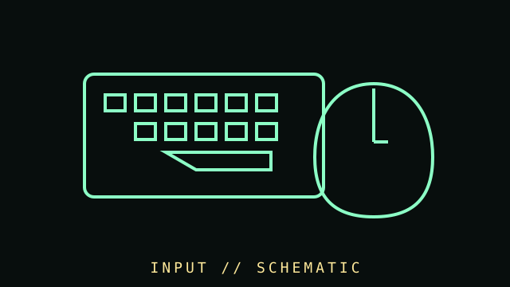

[ SUBCATEGORY DIRECTORY // 8 FILES // 237 PART RECORDS ]
Browse input devices subcategories
Each leaf page lists individually cataloged input products.
Browse exact-model input records, documentation, host cautions, and care notes.
OPEN SUBCATEGORY FILE →SUBCATEGORY FILE // 43 PART RECORDSMice and trackballsBrowse exact-model input records, documentation, host cautions, and care notes.
OPEN SUBCATEGORY FILE →SUBCATEGORY FILE // 16 PART RECORDSGame controllersBrowse exact-model input records, documentation, host cautions, and care notes.
OPEN SUBCATEGORY FILE →SUBCATEGORY FILE // 14 PART RECORDSAdaptive and switch-access controlsBrowse exact-model input records, documentation, host cautions, and care notes.
OPEN SUBCATEGORY FILE →SUBCATEGORY FILE // 28 PART RECORDSPen tablets and digitizersBrowse exact-model input records, documentation, host cautions, and care notes.
OPEN SUBCATEGORY FILE →SUBCATEGORY FILE // 24 PART RECORDSJoystick controllersBrowse exact-model input records, documentation, host cautions, and care notes.
OPEN SUBCATEGORY FILE →SUBCATEGORY FILE // 06 PART RECORDSSpecialized input controllersBrowse exact-model input records, documentation, host cautions, and care notes.
OPEN SUBCATEGORY FILE →SUBCATEGORY FILE // 43 PART RECORDSImaging and audio-capture peripheralsBrowse exact-model input records, documentation, host cautions, and care notes.
OPEN SUBCATEGORY FILE →[ COMPONENT RECORD // HUMAN INTERFACE ]
Input
devices.
Input hardware translates physical actions, images, sound, or movement into signals a computer can process. The category spans keyboards, mice, controllers, touchscreens, scanners, tablets, and specialized accessibility devices.

CLASS RECORD: wired and wireless input peripherals. Connector compatibility does not guarantee protocol, driver, latency, or full-feature support.
Reference specifications
| Connection | USB, Bluetooth, proprietary 2.4 GHz receivers, PS/2, serial, game port, and specialized interfaces appear across generations. |
|---|---|
| Keyboard | Switch mechanism, layout, key matrix, rollover/anti-ghosting, scan rate, firmware, and programmable layers vary by model. |
| Pointing | Sensor type, resolution (CPI/DPI), polling, lift-off distance, buttons, wheel, surface compatibility, and wireless behavior require exact-model data. |
| Capture / access | Scanner optical resolution, color depth, document feeder, tablet pressure/tilt, controller polling, and accessibility controls are device-specific. |
Catalog & care
- Record exact model, connector, protocol, firmware, driver, battery type, receiver identity, and supported operating systems.
- Do not confuse interpolated scanner resolution or a mouse's maximum DPI with effective detail or precision.
- Inspect cable strain reliefs, switches, keycaps, encoders, battery leakage, and wireless receiver pairing before repair.
- Clean with manufacturer-safe methods; avoid liquid ingress and incompatible solvents around switches, coatings, and optical assemblies.
- Preserve custom firmware/configuration and note whether required setup software remains available.
Other input families
Trackballs, light pens, digitizers, barcode readers, gamepads, MIDI controllers, microphones, webcams, biometric readers, and switch-access devices belong in the broader directory.
Sources & further reading
- USB-IF — USB specificationsPrimary USB interface standards and device-class documentation.
- Bluetooth SIG — SpecificationsPrimary wireless protocol specification references.
- Microsoft Accessibility — Input and assistive technologyAccessibility resource overview; device-level manuals remain important.